生成AI活用セミナーを開催しました
業界におけるAI活用やホームページ内製化について学びました。
GKSチェーン協会の活動やお知らせをご紹介します。
業界におけるAI活用やホームページ内製化について学びました。
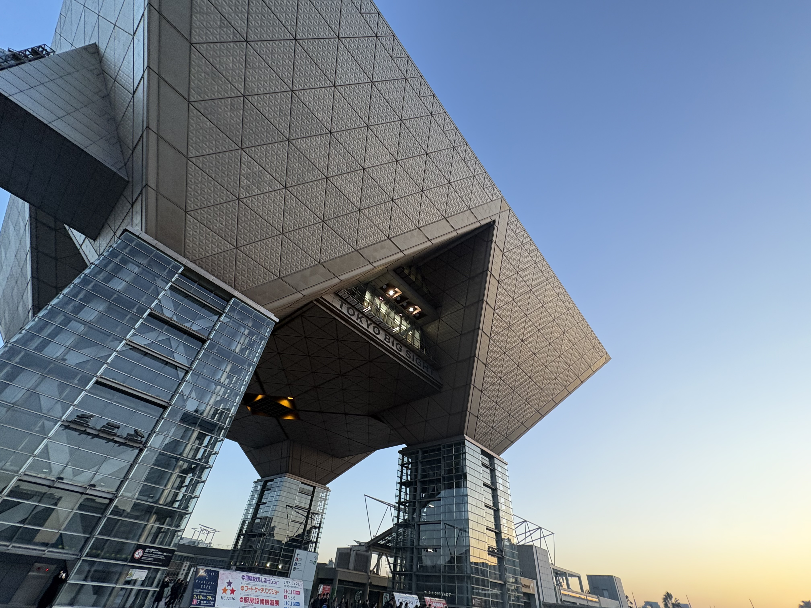
全国の会員企業が集まり、経営や営業の情報交換を行いました。
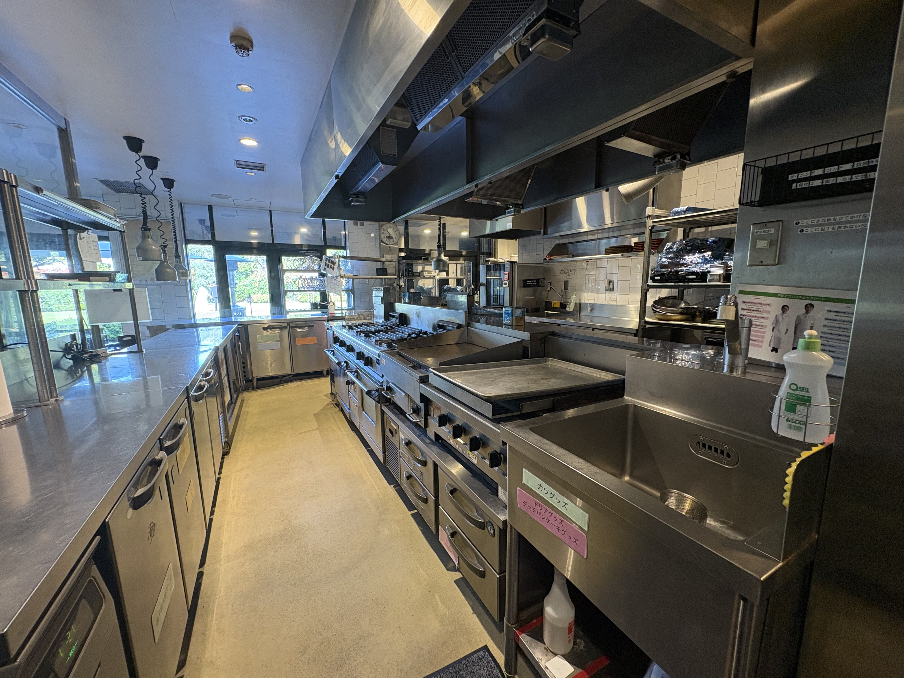
厨房機器メーカー様を招き、最新製品や市場動向を学びました。
GKSチェーン協会は、全国の厨房設備会社が集まり、 情報共有・研修・交流を通じて、業界全体の発展を目指す団体です。
会員企業同士が学び合い、メーカーや関連企業とも連携しながら、 地域のお客様により良い厨房づくりを提供していきます。
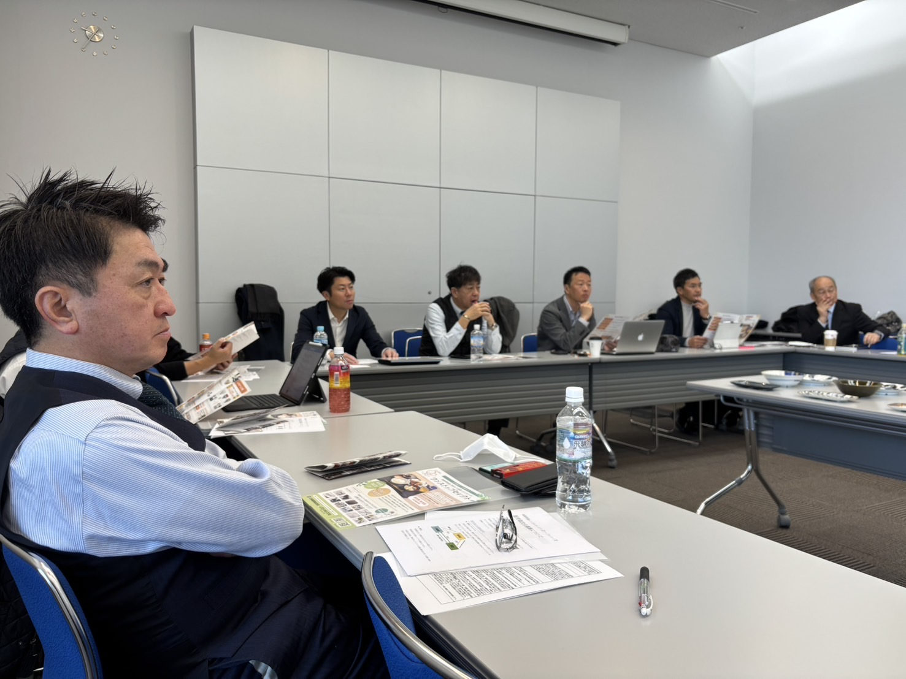
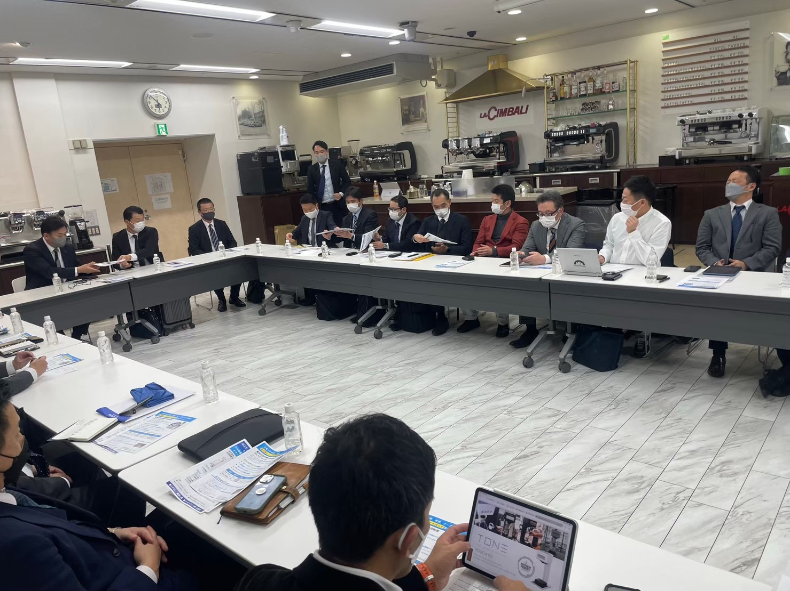
全国の仲間とつながり、学び、企業として成長できます。
成功事例や経営ノウハウを共有し、自社の成長に活かせます。
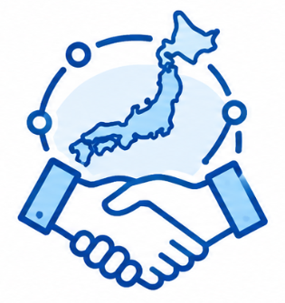
同じ業界で働く仲間と交流し、相談できる関係を築けます。
メーカー情報や市場動向など、業界の最新情報を学べます。
AIやDXなど、これからの時代に必要な取り組みを共有できます。
GKSチェーン協会では、年間を通じてさまざまな活動を行っています。

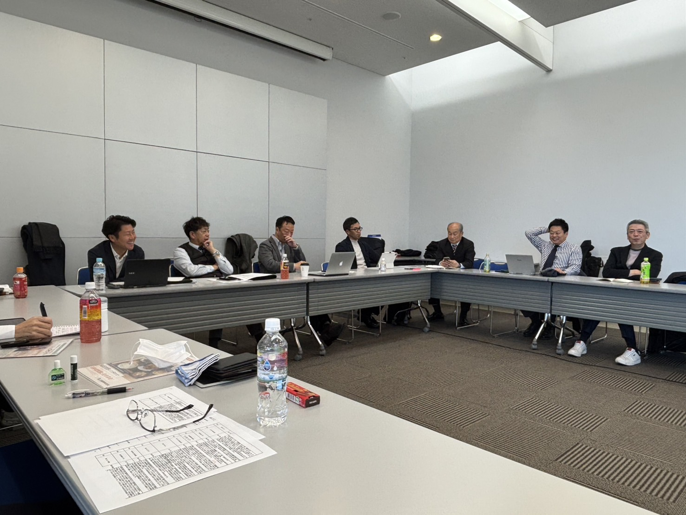
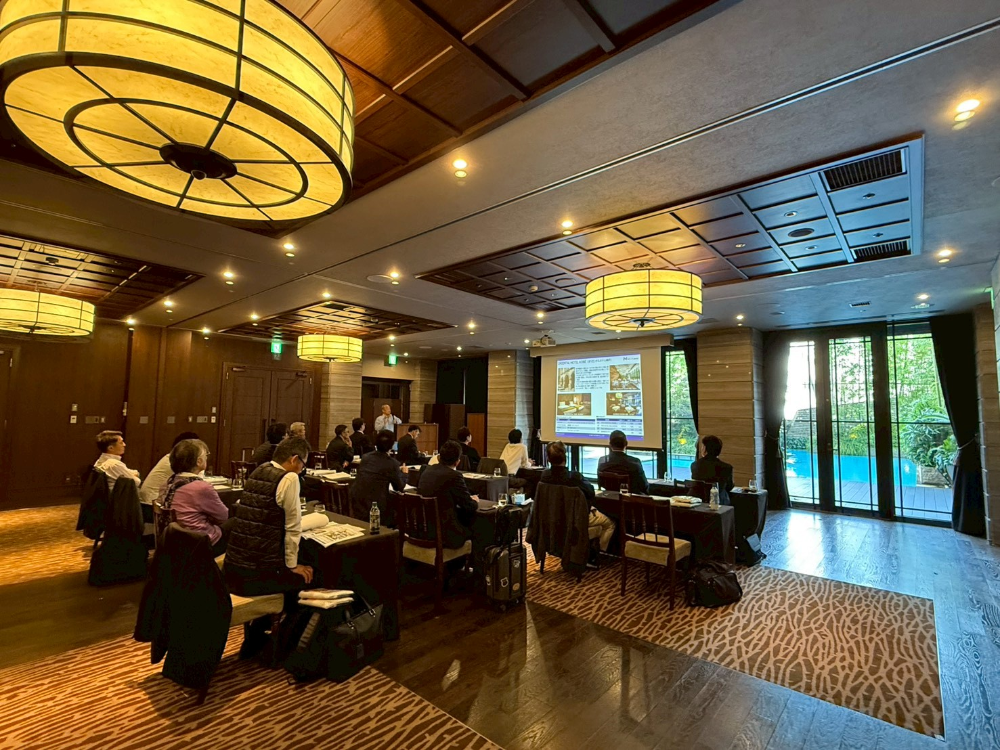
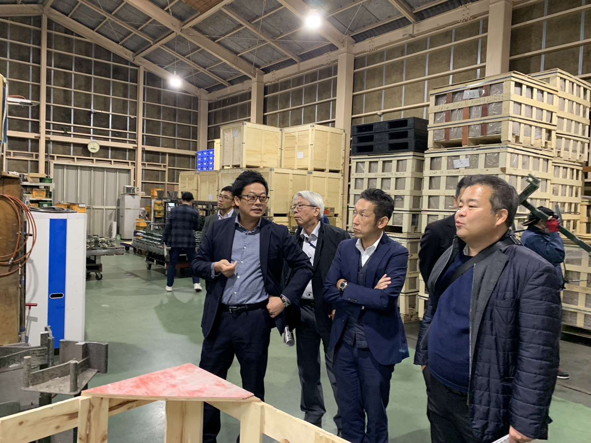

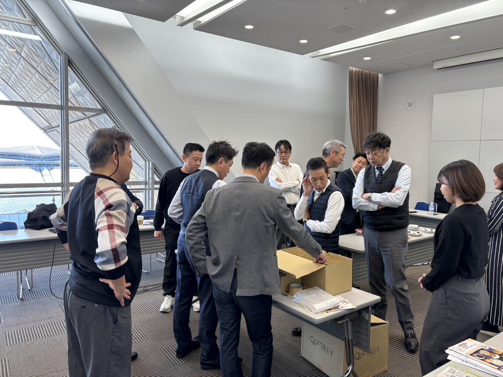
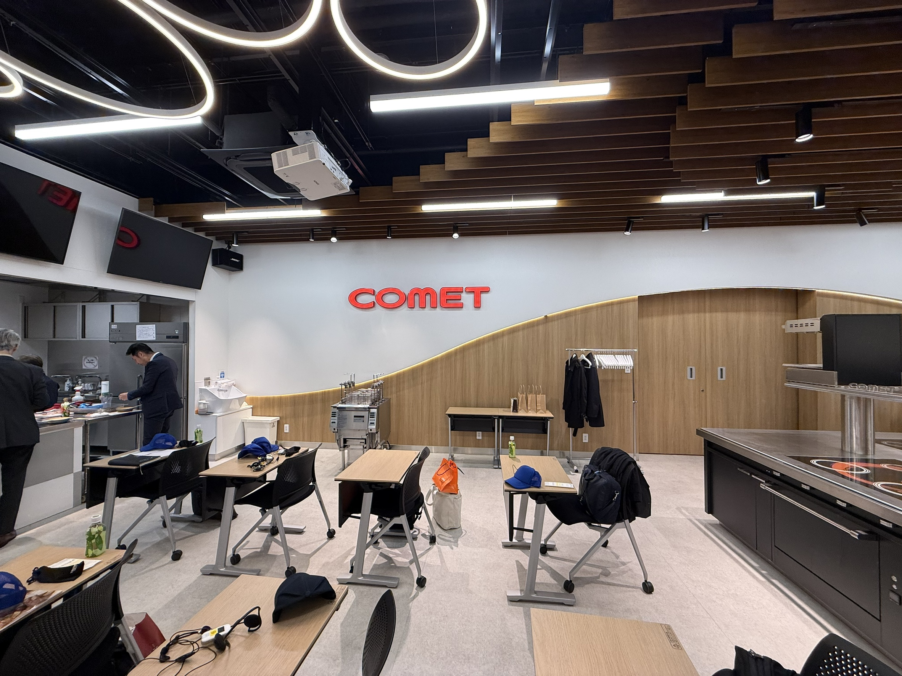
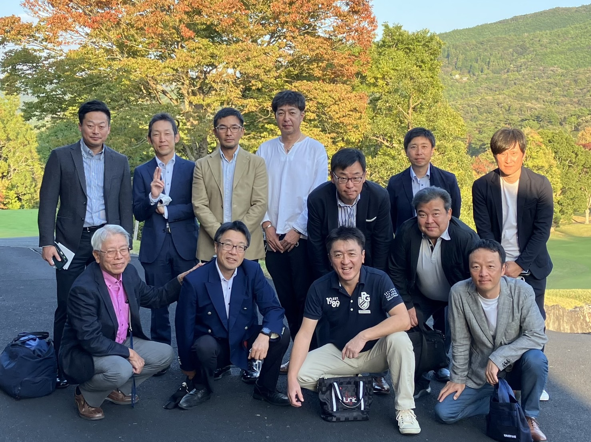
全国の厨房設備会社・厨房機器販売会社が参加しています。
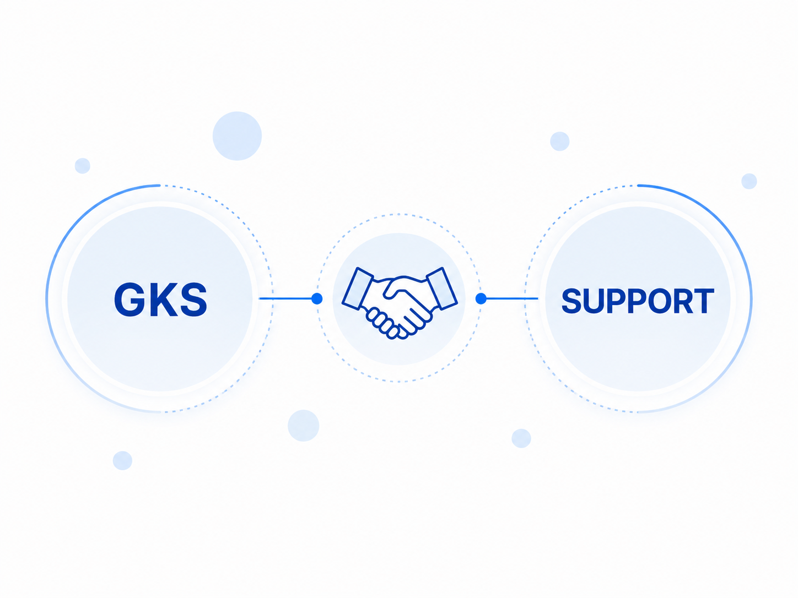
メーカー・商社・関連企業が協会活動を支えています。
GKSチェーン協会は、全国の会員企業とともに活動しています。
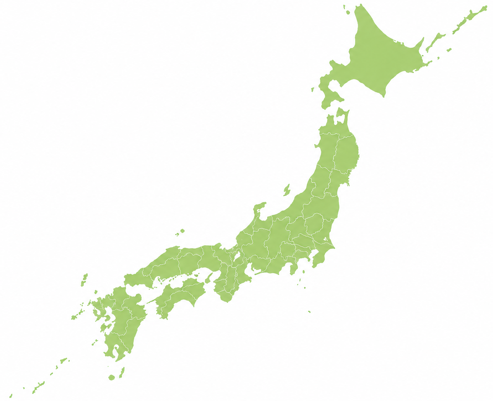

厨房業界の発展を目指し、協会活動が始まりました。

全国の厨房設備会社がつながり、情報共有の場が広がりました。

これからの時代に向けて、新しい学びと取り組みを進めています。
業界の未来に向けて、AIやDXの活用にも取り組んでいます。


GKSチェーン協会は、全国の厨房設備会社が学び、 情報を共有し、共に成長していくためのネットワークです。
厨房業界を取り巻く環境は日々変化しています。 私たちは会員企業同士がつながり、 新しい知識や情報を共有することで、 業界全体の発展に貢献したいと考えています。
今後も会員企業の皆様と共に学び、 共に成長し、 次世代へつながる協会づくりを進めてまいります。
入会相談や協会活動についてのお問い合わせはこちらからお願いします。